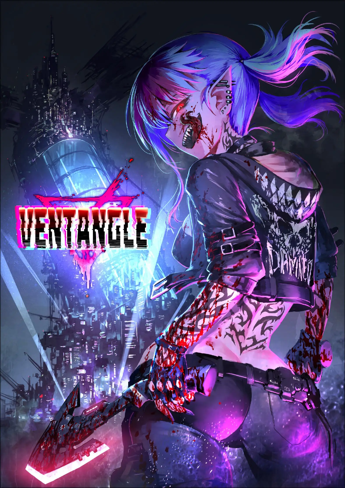

本规则汉化首发于：
https://github.com/ventangle-zh-cn/ventangle-zh-cn
欢迎到上述地址反馈翻译问题或是获取最新版本。
官方：
购买地址：
Ventangle （核心）：
Kamimachi Street （扩展）：
Game Box1 （模组）：
Kachikomi Inventory （扩展）：
版本历史：
2024年2月30日发布v0.1译版 同步已有翻译。
Ventangle汉化译者说明Ventangle24世纪，堕落的熔炉充满魔法的赛博朋克网络世界的众神阅读指南前言本书阅读指南TRPG用语解释数据用语世界观用语成人向跑团的心得共识线上跑团追猎者档案夹模板追猎者穷命恶徒参考资料①个人档案夹制作追猎者推荐武器表武器表妖精表神明表人脉表角色类型表身体形式表服装表住所表追猎者称号表野路子Irregular老江湖Professional古血统Elder Blood换身灵Changeling永恒者ELF人造人Automata魅魔Succubus吸血鬼Vampire神使者Apostle现人神Avatar破局手Fighter护卫者Soldier神枪手Gunner暗杀者Assassin魔术师Magi妖术师Witch调停人Fixer探秘人Seeker风流客Bitch洗脑师Dominant电子装备魔术装备生化装备纳米装备道具利器格斗手枪突击步枪狙击步枪法杖祸鞭诱惑圣物强化服参考资料②系统档案夹跑团流程判定恢复能力人脉ERP工作的管理战斗武器的能力与特殊效果负面状态角色属性成长俗世斗争枪艺死神幻惑淫魔咒术暗黑祝福混沌多个PC参与的跑团不含性行为的Ventangle地图档案夹这个世界的一切因何而起大变革堕天特区的建立堕天特区的构造乐园区住宅区港湾区外壁区宵暗区迷宫区异界24世纪的社会近未来的性描写新的居民大妖堕天特区的组织怡丽丝尔集团姐妹会警备保障八重家刘家伊什塔尔神殿妖辻酒吧法芙娜Nobullshit地下技术人员武器商人堕天特区的传说主持人档案夹GM指南剧本编写：NPC的设计剧本编写：活跃的场景剧本编写：委托剧本编写：遭遇剧本编写：战斗剧本编写：敌对NPC补充的GM指南机密档案夹剧本阅读指南剧本：HUNTING GAME剧本：DEAD GAME剧本：DEAD GAME索引

已然不会发生全面战争。
已然不再遭受灭顶天灾。
环境破坏已经停止。
能源问题已经解决。
伴随而来的……便是人类的堕落。
堕落唤起了一场“大变革”，扭曲了世界，改写了史书。
科学与魔法血乳交融。
机械、妖精与神明们为非作歹。
富人们耽溺于永恒者奢华的肉欲而沦为废人。①
穷人们被迫成为强改者艰苦劳动而偿还债务。
下水道之中，僵尸与史莱姆蠢蠢欲动。
如今的世界已经被混乱所污染，成为了堕落的熔炉。
(译者注：①永恒者，原文ELF。具体翻译参见后文。)
『这个世界无所谓。我自己也无所谓。
然而你们这帮无所谓的家伙，才是我还活着的理由。』
——浊世雪莲（Pure Princess），实况主&悬赏目标
舞台是一座未来都市。
也就是所谓的赛博朋克。
而且是魔法与科学并存的赛博朋克。
这个社会，被企业与教团支配着。
企业士兵们在街道上手持突击步枪列队游行。
魔术师们在高新尖端实验室中编写魔法公式。
无数神明将自己的使徒送入现界，构筑教团。
繁华街上，魅魔们扯着路人的袖子努力拉客。
小巷子里，妖精和妖怪四处穿行，胡作非为。
黑社会中，吸血鬼们高高筑起了那犯罪帝国。
而市民也并非手无缚鸡之力。随身携带枪支匕首成为常态，危险的肉体改造比比皆是。
那个时代，肉体改造已经成为了一种时尚。
富人们换上了最理想的身体器官，在穷奢极糜的生活中向不死的存在——永恒者进发。
一个没有任何事物值得肯定的，混沌的社会。
一个扑灭了所有虚拟现实，蠕动前进的未来。
每个人都在漫无目的地寻求刺激与快感，渴望感受到生命的真实感。
社会也好，肉体也罢，早已经变成了一潭死水。
唯有肉体接触和思想交融，才能短暂地感受到自己还活着。
「喂，我可不能把重要的东西跟你挑明白了。
毕竟，活人的嘴可关不严实啊。」
——狐踪匿影（Kitsune Sign），电子狐狗狸
与科学的高度进步恰恰相反，网络信息的发达程度与现在的社会基本相同。公共互联网服务甚至有倒退的迹象。没有什么脑机交换接口，连用虚拟现实来网上冲浪都不可能。企业将自己的秘密从网络上严密地隔离了起来。虚拟货币的信赖度很低，只有现金(信用点)才是硬通货。
这也是没办法的办法。
支配电子世界的东西并非人类也非企业……而是作为信息生命体而诞生的，难以计数的神明。 神明都是以自我为中心的利己主义者，而且极为狡猾。
在变成众神乱世的电脑世界里，任何规章或者制度都没有话语权。神明的性格往往喜怒无常，不知何时就会突然公开某些情报。
娱乐和社交网络都是由神明来提供的，同时负责让信息流保持流动……然而企业并不信任他们。
「给与粮食，又爱、美、胜。不须他报。
但须支吾之领域，蒙神我之“权利”。」
——伊什塔尔，自然与丰收之女神
运营并且活用信息网络的正是“教团”。
教团是一个组织群体，他们和企业一起控制着这个社会。
这是由蒙受了神之启示的使徒们，或者得到了肉身的神明自身来运营的。
他们控制着大部分的情报媒体和娱乐服务。那些负责宣传和监视的无人机，也基本都是教团的东西。
视频平台，社交网络，交易网站，游戏。这些内容被作为祭祀神灵的“仪式”。VR技术的泛用化被强行终止也是企业对神明的反抗。
而且，历史悠久的神明们大多都掌握着农耕和丰收，也有神灵控制酒类。事到如今，神明已经成为了食品生产的关键。
凭借对网络的支配权和娱乐的需求，神明和他们的教团成为了这个社会上不可或缺的存在。
| 领域 | 推荐武器 |
|---|---|
| 破局手 | 利器、格斗、手枪、圣物 |
| 护卫者 | 利器、手枪、突击步枪、强化服 |
| 神枪手 | 手枪、突击步枪、狙击步枪 |
| 暗杀者 | 利器、格斗、手枪、狙击步枪 |
| 魔术师 | 法杖、圣物、强化服 |
| 妖术师 | 法杖、祸鞭、诱惑 |
| 调停人 | 格斗、手枪、诱惑 |
| 探秘人 | 手枪、诱惑、强化服 |
| 风流客 | 格斗、手枪、诱惑 |
| 洗脑师 | 法杖、祸鞭、诱惑 |